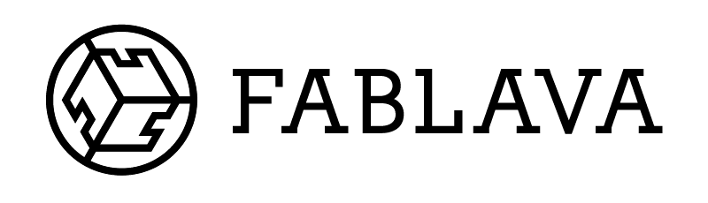
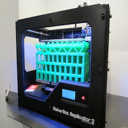
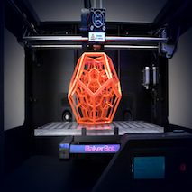
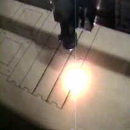
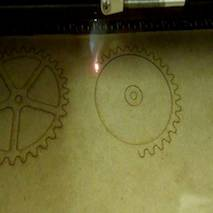
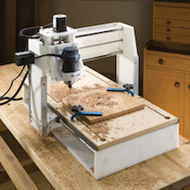
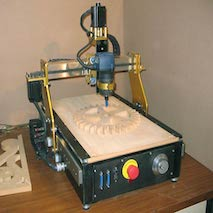
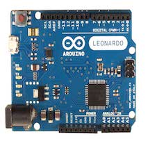
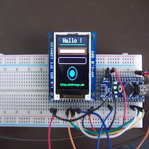

Maker space initiative in Bratislava, Slovakia
We are involved with other groups that have similiar interests and activities
Our aim is to create space for makers and tinkeres
Imagine space, where you have free access to 3D printer, Laser Cutter, CNC router and electronics
Initiative
CVTISR
Francúzsky Inštitút
Mesto Bratislava
Slovenská Technická Univerzita
Initiative of maker activists in Bratislava
Tools







